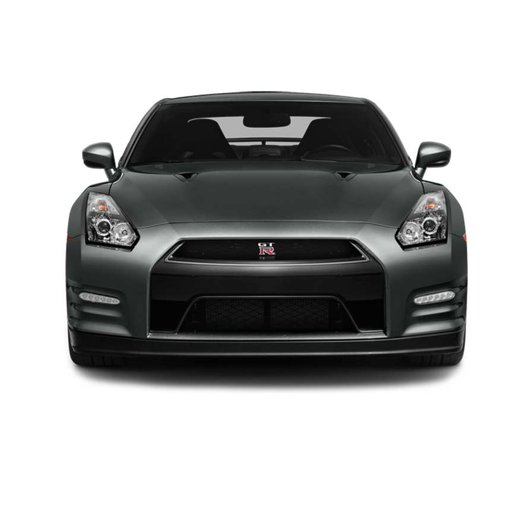
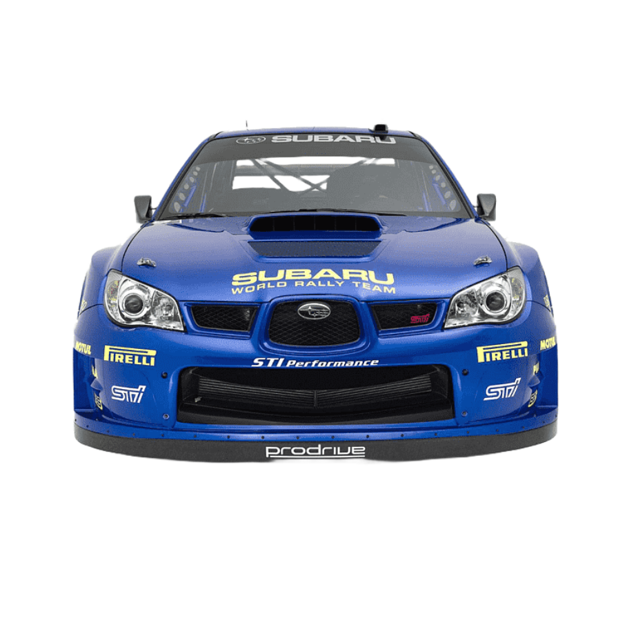
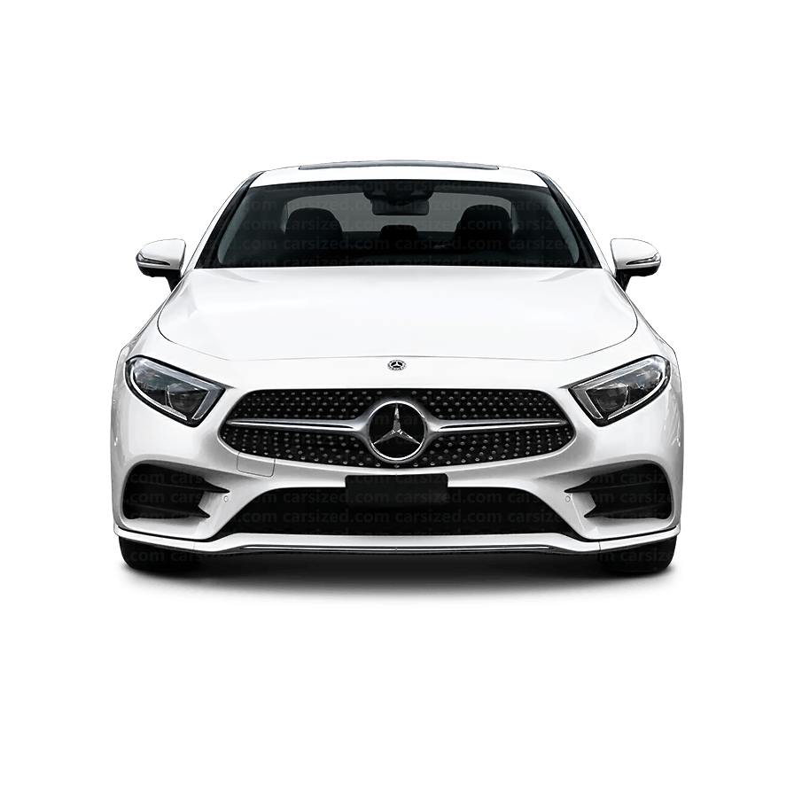

Supra MK4 has six-cylinder twin turbocharged engine. It has 5- or 6-speed manual transmission. Some MK4s have 4-speed automatic transmission too. MK4s accelerate from 0 to 100km/h in just 4.9 seconds.
BMW
M4 Competition
BMW M4 Competition has six-cylinder twin-turbo engine. It has 6-speed manual or 7-speed dual-clutch transmission. M4 Comp accelerate from 0 to 100km/h in just 4 seconds.

Nissan
GT-R
Nissan GT-R has six-cylinder twin-turbocharged engine. It has 6-speed dual-clutch transmission. Nissan GT-R accelerate from 0 to 100km/h in just 2.7 seconds.
Nissan
GT-R R34
Nissan GT-R R34 has six-cylinder twin-turbocharged engine. It has 6-speed manual transmission. Nissan GT-R R34 accelerate from 0 to 100km/h in just 5.2 seconds.

Subaru
WRX
Subaru WRX has four-cylinder petrol engine. It has 6-speed transmission. Subaru WRX accelerate from 0 to 100km/h in 5.5 seconds.

Mercedes
CLS
Mercedes CLS has four-cylinder or six-cylinder turbo engine. It has 9-speed automatic transmission. It accelerate from 0 to 100km/h in 6.1 seconds.